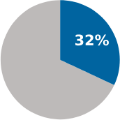
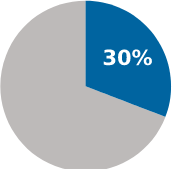
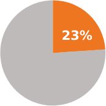

IXAZOMIB (NINLARO) DISCONTINUATION
AND DOSE REDUCTION DATA FROM TWO
REAL-WORLD STUDIES2,3
Real-World Evidence
Hajek et al: INSIGHT-MM and RMG2
Drug discontinuation and dose reduction rates due to documented AEs
were similar between Ixazomib (NINLARO) and lenalidomide
DRUG DISCONTINUATIONS
Ixazomib
(NINLARO)

(NINLARO)
Lenalidomide

Patients discontinued regimen
due to documented AEs
due to documented AEs
DOSE REDUCTIONS
Ixazomib
(NINLARO)
(NINLARO)
Lenalidomide

Patients required dose reduction
due to documented AEs*
due to documented AEs*
Chari et al: Optum’s EHR database, US3
Risk of component discontinuation
IRd vs KRd
IRd vs VRd
KRd vs VRd
PI component
HR: 0.65
P=0.0034
P=0.0034
HR: 0.62
P=0.0003
P=0.0003
HR: 0.94
P>0.05
P>0.05
Lenalidomide component
HR: 0.64
P=0.0015
P=0.0015
HR: 0.75
P=0.0312
P=0.0312
HR: 1.18
P>0.05
P>0.05
Risk of discontinuation was significantly lower for the Ixazomib (NINLARO) + Rd vs KRd